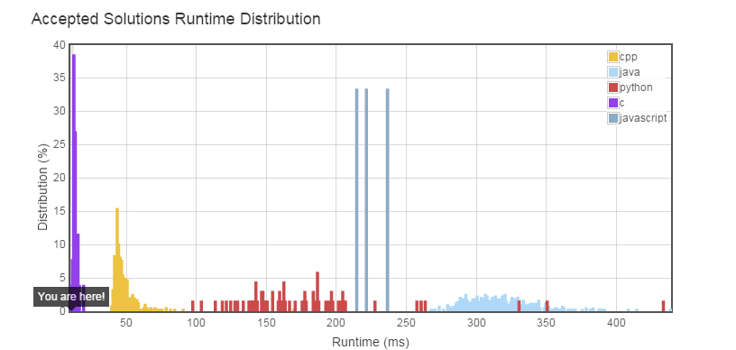

Follow up for problem "Populating Next Right Pointers in Each Node".
What if the given tree could be any binary tree? Would your previous solution still work?
Note:
You may only use constant extra space.
For example,
Given the following binary tree,
1
/ \
2 3
/ \ \
4 5 7
After calling your function, the tree should look like:
1 -> NULL
/ \
2 -> 3 -> NULL
/ \ \
4-> 5 -> 7 -> NULL
Use level-travelsal to visit this binary tree,then record each node's level info,so we can link them up, and the code is like this below:
///*
struct TreeLinkNode {
int val;
struct TreeLinkNode *left, *right, *next;
};
//*/
#define Node struct TreeLinkNode
#define MAX 30
typedef struct queue{
int level;
Node *node;
}queue;
int front = 0;
int rear = 0;
queue q[MAX];
void push(Node *p, int level)
{
p->next = NULL;
q[rear].node = p;
q[rear].level = level;
rear++;
}
queue pop()
{
return q[front++];
}
int isEmpty()
{
return (front==rear);
}
void connect(Node *root) {
queue tmp;
if(root == NULL){
return ;
}else{
push(root,1);
}
while(!isEmpty()){
tmp = pop();
if(tmp.node->left != NULL){
push(tmp.node->left,tmp.level+1);
}
if(tmp.node->right != NULL){
push(tmp.node->right,tmp.level+1);
}
}
front = 0;
while(front + 1 < rear){
if(q[front+1].level == q[front].level){
q[front].node->next = q[front+1].node;
}
front++;
}
}
This method use a special queue to store the level info with a classical level-travelsal to visit the binary tree. However, this method cause a time limitation exceed.
Now we consider the question,connect the same level leaves with next pointer.
We can use such a solution like this:
Use Node *parent to record parent level leaves.
Use Node *head to record first of this level's leaves.
Use Node *curr to record concurrent connected leaf.
1.put the root node as a parent,and of course,it's next = NULL;
2.head point to parent's first node at the left side.If this node(parent) don't have any leaves, you should find the next parent->next;
3.connect the leaves,update the curr,and use curr to connect all this level's leaves.Remember to set last curr's next value to NULL.
4.After find all of the leaves in this level,let parent = head,head = NULL, curr = NULL
code is like this below:
#include<stdio.h>
#include<stdlib.h>
///*
struct TreeLinkNode {
int val;
struct TreeLinkNode *left, *right, *next;
};
//*/
#define Node struct TreeLinkNode
void connect(Node *root) {
if(root == NULL){
return ;
}else{
root->next = NULL;
}
Node *parent = root;
Node *head = NULL;
Node *curr = NULL;
while(parent != NULL){
if(head == NULL){
if(parent->left != NULL){
curr = head = parent->left;
head->next = (parent->right == NULL)?NULL:parent->right;
curr = (parent->right == NULL)?head:parent->right;
curr->next = NULL;
}else if(parent->right != NULL){
curr = head = parent->right;
curr->next = NULL;
}
}else{
if(parent->left != NULL && curr != NULL){
curr->next = parent->left;
curr = parent->left;
if(parent->right != NULL){
curr->next = parent->right;
curr = parent ->right;
}
curr->next = NULL;
}else if(parent->right != NULL && curr != NULL){
curr->next = parent->right;
curr = parent->right;
curr->next = NULL;
}
}
parent = parent ->next;
if(parent == NULL){
parent = head;
head = NULL;
curr = NULL;
}
}
}
And this time ,accepted.Reuslt is like this:

4/22/2015 6:25:03 PM